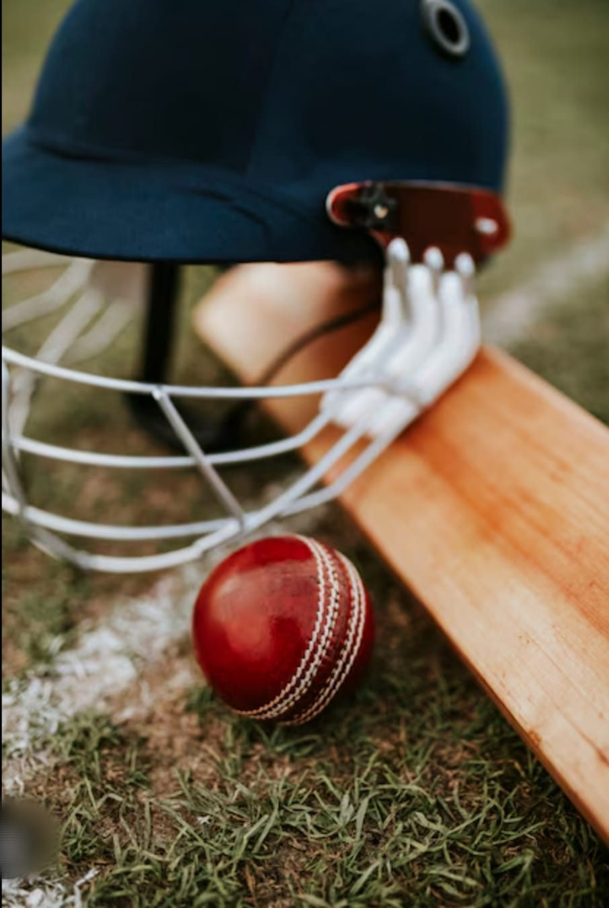

Cricket
Cricket is a bat-and-ball team sport played between two teams of 11 players each.
It is one of the most popular sports in the world, especially in countries like India, England, Australia, Pakistan, South Africa, and the West Indies.
Objective of the Game
- The batting team tries to score runs by hitting the ball and running between the wickets.
- The bowling/fielding team tries to dismiss the batters and limit the runs.
- The team with the highest runs at the end of the match wins.

Roles of Players
- Batsmen - Score runs.
- Bowlers - Deliver the ball to get batsmen out.
- Fielders - Support bowlers by catching, stopping runs, and run-outs.
- Wicketkeeper - Stands behind the stumps to catch balls and attempt stumpings.
- Captain - Leads strategy and decisions.
Important Rules
| Sr.No |
Rules |
| 1 |
Each Team contains 11 players. |
| 2 |
Runs are scored by hitting the ball and running between wickets. |
| 3 |
Bowling and batting alternate between teams. |